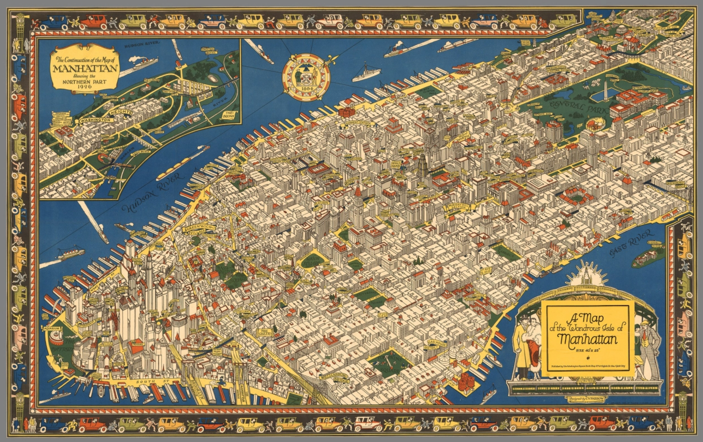
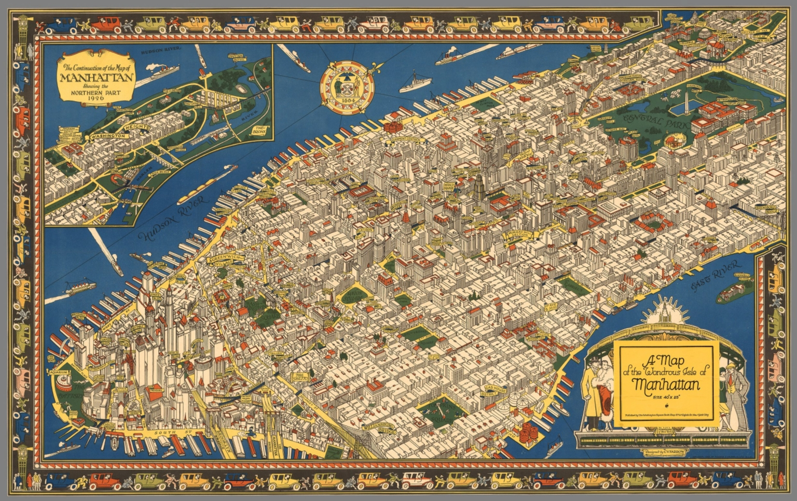

Manhattan
 

In 1609 Henry Hudson had led the first Dutch expedition to New York under the commission by the Dutch East India Company. His crew landoned in what is today known as the New York Harbor which was purchased from the Canarsie Indians for only $23.70! Today, Manhattan Island is now worht more than $60 billion. The original Dutch settlement on the island was named "New Amsterdam" but eventually was renamed to "New York" in 1664. The original inhabitants of this newfound land were the Wappingers known to be a Native Americna group. Many changes occured in New York especially during the 1800s due to the Great Fire which ran rampant in Manhattan. In addition to this, there were also signifcant upgrades in apartment dwellings because of the Tenement House Act of 1867. The legislation led to the upgrade of Manhattan apartments and living conditions especially with many of these dwellings doubling as sweatshops. Moving forward, after the completion of the transcontinental railroad, there was a huge influx of Chinese immigrants coming to the city and setting up what is known as Chinatown. Fun fact actually, Chinatown was once known as a bachelor community because of the Chinese Exclusion Act of 1882 preventing many wixes and children from reuniting with their husbands in America. In 1874, Manhattan had officially been named one of New York City's five boroughs in an effort to consolidate Manhattan Island and quickly after Westchester County towns were annexed. In the 1920s, the African-American culture flourished in Manhattan known as the Harlem Renaissance. During this era, Jazz became an extremely popular musical form and was played in many famous venues which included the Renaissance Ballroom, the Savoy Ballroom and even the all-white Cotton Club where Duke Ellington performed. On the other hand, it wasn't always so dandy during this era because the crime rate also skyrocketted. By 2005, the crime rate in Harlem became comparable with the wealthy, predominately white neighborhoods of American cities. Moving into the 20th century, Manhattan had experienced a major facelift and accomplished numerous "firsts". These included the opening of the first subway in 1904, the first edition of the New York Daily News in 1919, the opening of the Holland Tunnel in 1927 and the tragic occurrence in 1929 known as Black Tuesday when the stock market collapsed.

The first tourists arrived in New York City in the early 1820s as an outgrowth of the "Fashionable Tour". This city was not prepared to expect a huge amount of people as they only had second-class hotels and barely any summertime entertainment for these guests. As the numbers steadily increased for tourism, the city began keeping up with the changing times and implemented new ways to keep them entertained. By 1837, tourists had played a crucial role in keeping hotels filled, theaters occuped and museums bustling. The long-term effect of tourism quickly played a role in the economic development of New York City as a whole, making it the country's center of culture. Manhattan is considered one of the world's foremost commericla, financial and cultural centers mostly because of its many points of interest. The influx of people that made up Manhattan presented us today with attractions such as Broadway, Wall Street, the Empire State Building, Greenwich Village, Harlem, Central Park, The Metropolitan Museum of Art and so much more!